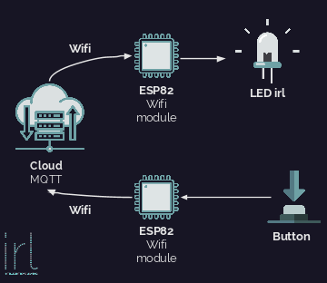

Durant 48h, nous avons comme objectif de créer ou innover sur la thématique de la Smart City. Nous avons créer un groupe de 5 personnes, 3 élèves spécialisés dans le domaine de l'informatique, une élève spécialisée dans le commerce et un élève spécialisé dans l'art. Avec toute cette équipe, nous avons donc créer ...
Une fois l'étape du choix fait, nous avançons au fur et à mesure sur la partie technique. La contrainte était de faire avec un arduino et des ESP82 un
Prove Of Concept fonctionnel lors de la présentation technique. Avec ce temps imparti, il a fallu aller à l'essentiel et surtout mettre en place la méthode agile,
comme ça on aurait toujours quelques choses à présenter au jury peu importe l'avancement de notre projet. Je me suis donc occupé de la partie électronnique avec les LEDs
et le multiplexeur.

Le problème a été le bon fonctionnement de notre projet. Nous avons mis beaucoup de temps avant de réaliser notre premier POC et lors de la présentation, nous avons dû
simplifier notre système pour que tout cela marche.
Le problème a été le bon fonctionnement de notre projet. Nous avons mis beaucoup de temps avant de réaliser notre premier POC et lors de la présentation, nous avons dû simplifier notre système pour que tout cela marche. N'étant pas spécialisé dans l'électronnique, j'ai eu du mal à bien cerner le concept de multiplexeur, ce qui nous coûté beaucoup de temps.
J'ai pu développer mes compétences en électronnique mais aussi en informatique notamment avec le réseau MQTT que nous avons utilisé. Ce n'était pas ma parti, mais en voyant les autres faire, je me suis dit que ce protocole avait un potentiel énorme dans le monde de l'IoT.
La chose la plus importante que j'ai pu apprendre dans ce projet a été l'importance des multiples formations. A l'INSA, nous avons toujours travaillé en spécilité sans rencontrer les autres domaines. Dans ce projet, chacun avait à charge son domaine et on était impréssionné par ce que chacun avait produit. Dans la présentation, le diaporama avait une multitude de schéma 3D avec une charte graphique identique mais aussi la présentation du jury réalisée par notre collégue de TBS (Toulouse Business School) était claire et précise. On voulait acheter ce produit !